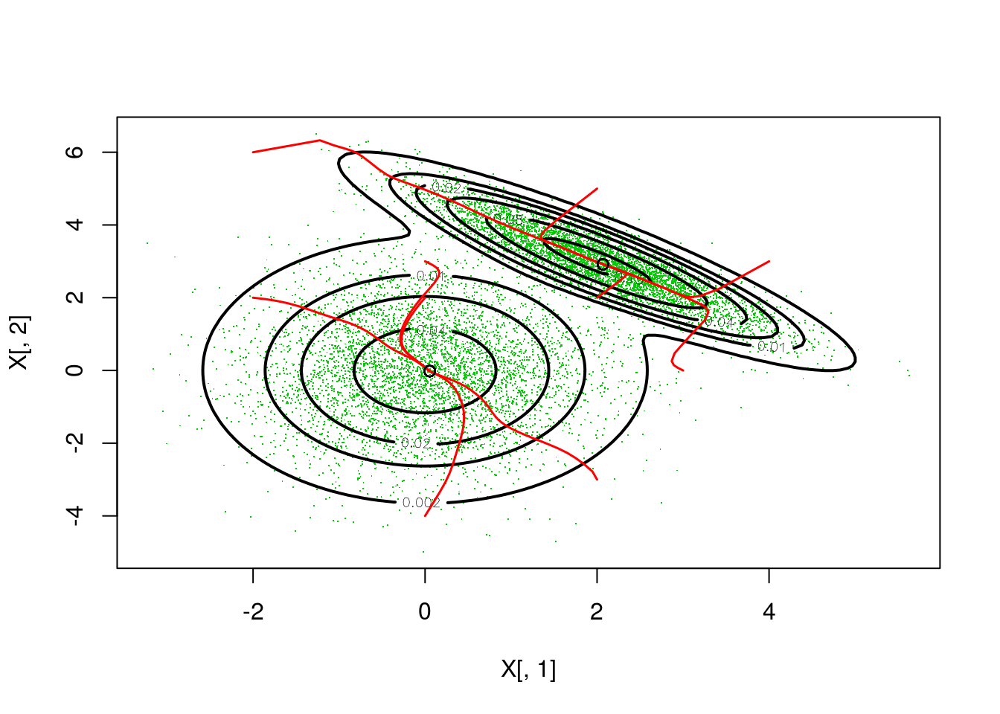

The mvnfast R package provides computationally efficient tools related to the multivariate normal and Student’s t distributions. The tools are generally faster than those provided by other packages, thanks to the use of C++ code through the Rcpp\RcppArmadillo packages and parallelization through the OpenMP API. The most important functions are:
rmvn(): simulates multivariate normal random vectors.rmvt(): simulates Student’s t normal random vectors.dmvn(): evaluates the probability density function of a multivariate normal distribution.dmvt(): evaluates the probability density function of a multivariate Student’s t distribution.maha(): evaluates mahalanobis distances.In the following sections we will benchmark each function against equivalent functions provided by other packages, while in the final section we provide an example application.
Simulating multivariate normal random variables is an essential step in many Monte Carlo algorithms (such as MCMC or Particle Filters), hence this operations has to be as fast as possible. Here we compare the rmvn function with the equivalent function rmvnorm (from the mvtnorm package) and mvrnorm (from the MASS package). In particular, we simulate \(10^4\) twenty-dimensional random vectors:
library("microbenchmark")
library("mvtnorm")
library("mvnfast")
library("MASS")
# We might also need to turn off BLAS parallelism
library("RhpcBLASctl")
blas_set_num_threads(1)N <- 10000
d <- 20
# Creating mean and covariance matrix
mu <- 1:d
tmp <- matrix(rnorm(d^2), d, d)
mcov <- tcrossprod(tmp, tmp)
microbenchmark(rmvn(N, mu, mcov, ncores = 2),
rmvn(N, mu, mcov),
rmvnorm(N, mu, mcov),
mvrnorm(N, mu, mcov))## Unit: milliseconds
## expr min lq mean median
## rmvn(N, mu, mcov, ncores = 2) 3.002543 3.108198 4.673041 3.544022
## rmvn(N, mu, mcov) 5.269046 5.461131 6.653810 5.602943
## rmvnorm(N, mu, mcov) 15.196825 16.558912 23.353344 17.262071
## mvrnorm(N, mu, mcov) 14.787562 16.195220 20.429942 16.605675
## uq max neval cld
## 4.233790 42.23806 100 a
## 6.185731 46.17587 100 a
## 18.707405 63.73079 100 b
## 17.317955 75.85460 100 bIn this example rmvn cuts the computational time, relative to the alternatives, even when a single core is used. This gain is attributable to several factors: the use of C++ code and efficient numerical algorithms to simulate the random variables. Parallelizing the computation on two cores gives another appreciable speed-up. To be fair, it is necessary to point out that rmvnorm and mvrnorm have many more safety check on the user’s input than rmvn. This is true also for the functions described in the next sections.
Notice that this function does not use one of the Random Number Generators (RNGs) provided by R, but one of the parallel cryptographic RNGs described in (Salmon et al., 2011) and available here. It is important to point out that this RNG can safely be used in parallel, without risk of collisions between parallel sequence of random numbers, as detailed in the above reference.
We get similar performance gains when we simulate multivariate Student’s t random variables:
# Here we have a conflict between namespaces
microbenchmark(mvnfast::rmvt(N, mu, mcov, df = 3, ncores = 2),
mvnfast::rmvt(N, mu, mcov, df = 3),
mvtnorm::rmvt(N, delta = mu, sigma = mcov, df = 3))## Unit: milliseconds
## expr min lq
## mvnfast::rmvt(N, mu, mcov, df = 3, ncores = 2) 5.669553 5.797279
## mvnfast::rmvt(N, mu, mcov, df = 3) 7.943431 8.062002
## mvtnorm::rmvt(N, delta = mu, sigma = mcov, df = 3) 18.332169 20.087072
## mean median uq max neval cld
## 7.47863 5.930236 7.090085 107.66883 100 a
## 8.89368 8.356582 9.400072 19.01358 100 a
## 33.45673 21.200880 24.014178 134.50451 100 bWhen d and N are large, and rmvn or rmvt are called several times with the same arguments, it would make sense to create the matrix where to store the simulated random variable upfront. This can be done as follows:
A <- matrix(nrow = N, ncol = d)
class(A) <- "numeric" # This is important. We need the elements of A to be of class "numeric".
rmvn(N, mu, mcov, A = A) Notice that here rmvn returns NULL, not the simulated random vectors! These can be found in the matrix provided by the user:
A[1:2, 1:5] ## [,1] [,2] [,3] [,4] [,5]
## [1,] -1.621542 -5.518662 -0.1128524 4.182526 0.948219
## [2,] 4.010453 8.739593 3.1504857 9.331998 15.144405Pre-creating the matrix of random variables saves some more time:
microbenchmark(rmvn(N, mu, mcov, ncores = 2, A = A),
rmvn(N, mu, mcov, ncores = 2),
times = 200)## Unit: milliseconds
## expr min lq mean median
## rmvn(N, mu, mcov, ncores = 2, A = A) 2.704773 2.729230 2.803429 2.746746
## rmvn(N, mu, mcov, ncores = 2) 2.958999 2.997206 4.114790 3.027894
## uq max neval cld
## 2.772958 5.444378 200 a
## 3.290303 81.724672 200 bDon’t look at the median time here, the mean is much more affected by memory re-allocation.
Here we compare the dmvn function, which evaluates the multivariate normal density, with the equivalent function dmvtnorm (from the mvtnorm package). In particular we evaluate the log-density of \(10^4\) twenty-dimensional random vectors:
# Generating random vectors
N <- 10000
d <- 20
mu <- 1:d
tmp <- matrix(rnorm(d^2), d, d)
mcov <- tcrossprod(tmp, tmp)
X <- rmvn(N, mu, mcov)
microbenchmark(dmvn(X, mu, mcov, ncores = 2, log = T),
dmvn(X, mu, mcov, log = T),
dmvnorm(X, mu, mcov, log = T), times = 500)## Unit: milliseconds
## expr min lq mean
## dmvn(X, mu, mcov, ncores = 2, log = T) 1.522084 1.600788 1.874700
## dmvn(X, mu, mcov, log = T) 2.634351 2.800842 3.087542
## dmvnorm(X, mu, mcov, log = T) 2.423877 2.604765 6.031730
## median uq max neval cld
## 1.748447 1.951963 4.501361 500 a
## 2.943484 3.220942 6.823783 500 a
## 3.695714 4.059366 110.128206 500 bAgain, we get some speed-up using C++ code and some more from the parallelization. We get similar results if we use a multivariate Student’s t density:
# We have a namespace conflict
microbenchmark(mvnfast::dmvt(X, mu, mcov, df = 4, ncores = 2, log = T),
mvnfast::dmvt(X, mu, mcov, df = 4, log = T),
mvtnorm::dmvt(X, delta = mu, sigma = mcov, df = 4, log = T), times = 500)## Unit: milliseconds
## expr min
## mvnfast::dmvt(X, mu, mcov, df = 4, ncores = 2, log = T) 1.698740
## mvnfast::dmvt(X, mu, mcov, df = 4, log = T) 2.844156
## mvtnorm::dmvt(X, delta = mu, sigma = mcov, df = 4, log = T) 2.661140
## lq mean median uq max neval cld
## 1.799308 2.050630 1.949040 2.047723 5.137722 500 a
## 2.986750 3.270440 3.105357 3.326990 7.935978 500 b
## 2.791660 5.993199 3.985475 4.141521 113.075709 500 cFinally, we compare the maha function, which evaluates the square mahalanobis distance with the equivalent function mahalanobis (from the stats package). Also in the case we use \(10^4\) twenty-dimensional random vectors:
# Generating random vectors
N <- 10000
d <- 20
mu <- 1:d
tmp <- matrix(rnorm(d^2), d, d)
mcov <- tcrossprod(tmp, tmp)
X <- rmvn(N, mu, mcov)
microbenchmark(maha(X, mu, mcov, ncores = 2),
maha(X, mu, mcov),
mahalanobis(X, mu, mcov))## Unit: milliseconds
## expr min lq mean median
## maha(X, mu, mcov, ncores = 2) 1.408665 1.449419 1.842679 1.620487
## maha(X, mu, mcov) 2.544158 2.617089 3.013666 2.783559
## mahalanobis(X, mu, mcov) 2.755934 2.967716 6.446385 4.043329
## uq max neval cld
## 1.901139 4.400092 100 a
## 3.032883 6.304947 100 a
## 4.445223 89.156060 100 bThe acceleration is similar to that obtained in the previous sections.
As an example application of the dmvn function, we implemented the mean-shift mode seeking algorithm. This procedure can be used to find the mode or maxima of a kernel density function, and it can be used to set up clustering algorithms. Here we simulate \(10^4\) d-dimensional random vectors from mixture of normal distributions:
set.seed(5135)
N <- 10000
d <- 2
mu1 <- c(0, 0); mu2 <- c(2, 3)
Cov1 <- matrix(c(1, 0, 0, 2), 2, 2)
Cov2 <- matrix(c(1, -0.9, -0.9, 1), 2, 2)
bin <- rbinom(N, 1, 0.5)
X <- bin * rmvn(N, mu1, Cov1) + (!bin) * rmvn(N, mu2, Cov2)Finally, we plot the resulting probability density and, starting from 10 initial points, we use mean-shift to converge to the nearest mode:
# Plotting
np <- 100
xvals <- seq(min(X[ , 1]), max(X[ , 1]), length.out = np)
yvals <- seq(min(X[ , 2]), max(X[ , 2]), length.out = np)
theGrid <- expand.grid(xvals, yvals)
theGrid <- as.matrix(theGrid)
dens <- dmixn(theGrid,
mu = rbind(mu1, mu2),
sigma = list(Cov1, Cov2),
w = rep(1, 2)/2)
plot(X[ , 1], X[ , 2], pch = '.', lwd = 0.01, col = 3)
contour(x = xvals, y = yvals, z = matrix(dens, np, np),
levels = c(0.002, 0.01, 0.02, 0.04, 0.08, 0.15 ), add = TRUE, lwd = 2)
# Mean-shift
library(plyr)
inits <- matrix(c(-2, 2, 0, 3, 4, 3, 2, 5, 2, -3, 2, 2, 0, 2, 3, 0, 0, -4, -2, 6),
10, 2, byrow = TRUE)
traj <- alply(inits,
1,
function(input)
ms(X = X,
init = input,
H = 0.05 * cov(X),
ncores = 2,
store = TRUE)$traj
)
invisible( lapply(traj,
function(input){
lines(input[ , 1], input[ , 2], col = 2, lwd = 1.5)
points(tail(input[ , 1]), tail(input[ , 2]))
})) As we can see from the plot, each initial point leads one of two points that are very close to the true mode. Notice that the bandwidth for the kernel density estimator was chosen by trial-and-error, and less arbitrary choices are certainly possible in real applications.
Dirk Eddelbuettel and Romain Francois (2011). Rcpp: Seamless R and C++ Integration. Journal of Statistical Software, 40(8), 1-18. URL http://www.jstatsoft.org/v40/i08/.
Eddelbuettel, Dirk (2013) Seamless R and C++ Integration with Rcpp. Springer, New York. ISBN 978-1-4614-6867-7.
Dirk Eddelbuettel, Conrad Sanderson (2014). RcppArmadillo: Accelerating R with high-performance C++ linear algebra. Computational Statistics and Data Analysis, Volume 71, March 2014, pages 1054-1063. URL http://dx.doi.org/10.1016/j.csda.2013.02.005
John K. Salmon, Mark A. Moraes, Ron O. Dror, and David E. Shaw (2011). Parallel Random Numbers: As Easy as 1, 2, 3. D. E. Shaw Research, New York, NY 10036, USA.